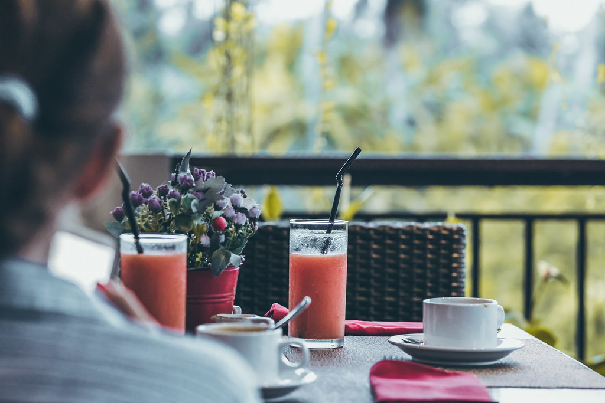

森の中で、肩の力を抜く一杯。
湯沢・苗場の森にたたずむ、手づくりカウンターカルチャーなカフェ gaia
ブナ林に囲まれた一軒家で、自家焙煎のコーヒーと手づくりの甘いものを。フジロックの帰り道も、ゲレンデのひと休みも、ここでは誰もがただのお客さん。看板猫が出迎える、森のカウンターカルチャー。

手づくりとカウンターカルチャーが息づく空間
湯沢町三俣、ブナの森に包まれた場所に gaia はあります。店内に並ぶのは、どこかで誰かが大切に使ってきたような家具たち。決まった型にはまらない、手づくりの温度がそのまま残る内装です。フジロックの季節には音楽帰りの方々が、雪の季節には苗場スキー場帰りの方々が立ち寄り、森の空気と一杯のコーヒーで旅の続きを整えていきます。

テラス席と、お店のアイドル
木々を見上げながらくつろげるテラス席は、ご来店者様にも「とっても素敵」と言っていただいている場所。風が通り抜ける時間に、肩の力がすっと抜けていきます。そしてもう一人(一匹)の主役が、お店で暮らす看板猫。気が向けば席の近くにふらりと現れて、森のカフェの時間をのんびりしたものに変えてくれます。
訪れた方々の声
フジロックの際に利用させていただきました。とってもリラックスできるし料理も美味しく最高です!! 風呂上がりに2日連続行ってしまいました(笑)
手作りカウンターカルチャーな感じのお店。お昼ごはんをいただきました。すごくおいしかったです。自家焙煎コーヒーとカボチャタルトも逸品。
他の料理も美味しかったですが、個人的にジンジャープリンが最高でした。生姜とプリンをコラボさせたアイデアが最高です。テイクアウトもできます。
フジロック・苗場スキー場からのお立ち寄りに
音楽フェスの熱気のあとも、ゲレンデで体を動かしたあとも、森の静けさの中で一息つける場所に gaia はあります。